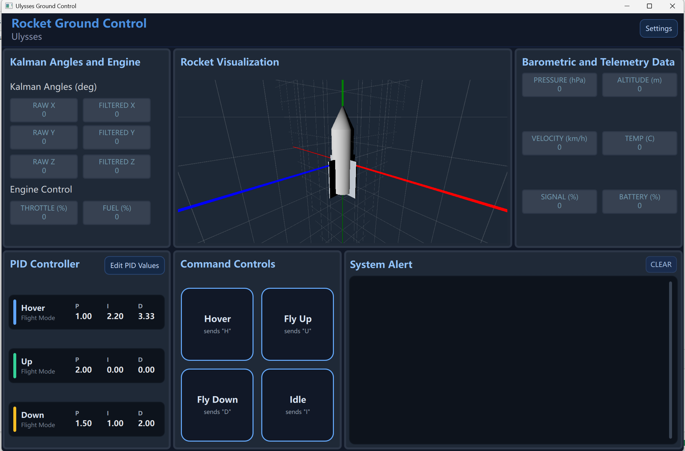

Overview
The Ulysses Ground Control Station is a cross-platform telemetry and control application built with Qt 6 for UBC Rocket's sounding-rocket development and mission operations. It provides real-time serial communication with RFD900x radio modems, live sensor telemetry decoding, 3D orientation visualization, system alerts, and modular UI panels tuned for engineering workflows.
I wrote the full C++ backend — the serial/radio interface, command sender, alarm processing, and telemetry model — along with the settings and configuration UI.

Serial & Radio Interface
The SerialBridge backend handles all radio I/O and supports two operating modes:
- Single-port mode — one COM port handles both RX and TX, with automatic RX pause during transmit to prevent echo/loopback on a single modem.
- Dual-port mode — dedicated RX and TX ports, each with independent baud settings, connect/disconnect, manual send, and a periodic command sender (1–200 Hz).
RFD900x modems are discovered by scanning COM ports with FTDI + CP210x adapter detection and AT-mode probing (the +++ guard sequence). The UI surfaces OS-level port errors and prevents the same port from being assigned to both ports at once.
Sensor Telemetry
Incoming telemetry arrives as a 14-field CSV frame, parsed by SensorDataModel and decoded into QML-bound properties updated at 10 Hz:
- IMU — linear acceleration (x, y, z) and gyro (roll, pitch, yaw)
- Barometer — pressure and altitude
- Kalman filter — raw and filtered angle
- Status — velocity, temperature, signal, battery
A Qt Quick 3D panel drives a live rocket model from the IMU stream (Euler rotation mapped to Qt's Y-up coordinate system, with axis helpers and WASD camera movement). The AlarmReceiver classifies incoming text into ERROR, WARNING, and SUCCESS chips in the System Alert panel.
Architecture
A clean split between a C++ backend and a QML frontend keeps the I/O and parsing logic testable and the UI declarative.
SerialBridge— serial I/O, port scanning, RX/TX, modem detectionCommandSender— manual and periodic command transmissionAlarmReceiver— classifies incoming text messagesSensorDataModel— parses CSV telemetry and exposes it to QML
The frontend is composed of modular QML panels — serial control, IMU data, barometer/telemetry, 3D visualization, and system alerts — built from a shared library of reusable UI components.